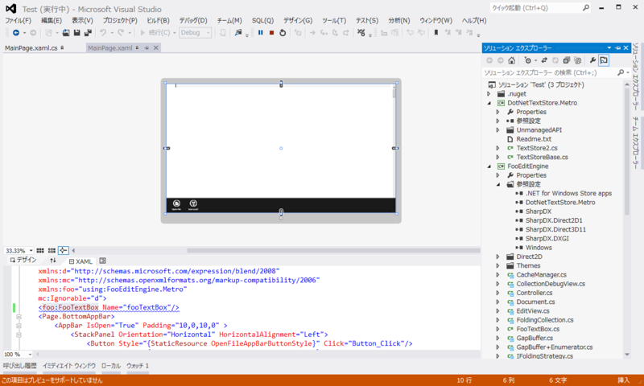
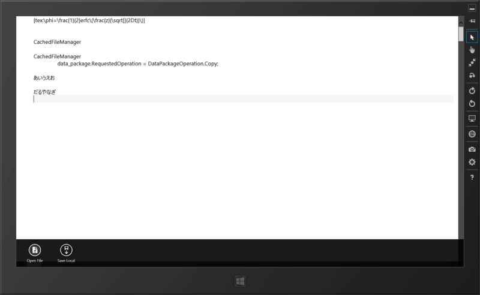
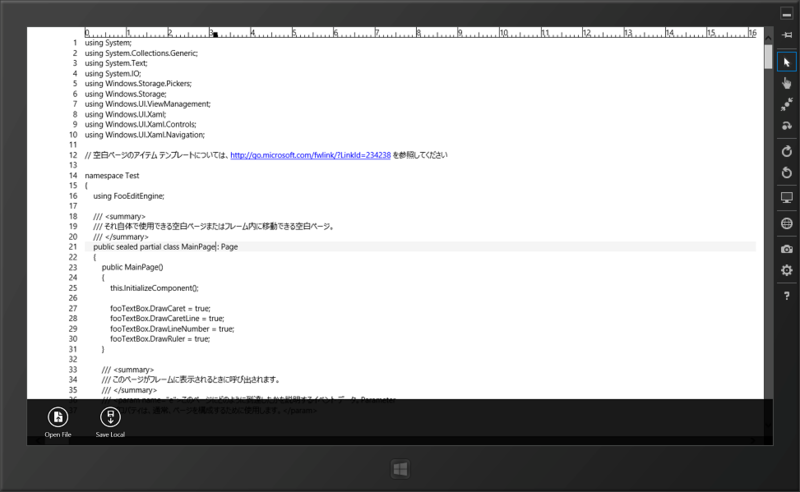

WinRT で使えるテキストエディターコンポーネント
公開日：

さびねこにゃです。ストアアプリでエディターコンポーネントを作ったので、置いておきますね。http://sdrv.ms/12phlHk
追記
WM_CHARに相当するイベントがないので、IME経由でしか文字入力ができません。【1名様】 Metro で使える素敵なテキストエディターを作ってくれる方に、Samsung Series 7 Slate を差し上げます - だるろぐ
スゴい！ id:none_2271 さん、ありがとうございます！

手元でもちゃんと動きました（そのままでは動かなかったけど、ごにょごにょとエラーを潰しているうちに動きました）。

さらっと試してみたところ、
- 行番号、ルーラー、キャレットの描画
- アンドゥ
- 印刷
- シンタックスハイライト（ちょっと IHighliter の使い方が分かんなかった）
などができるのかな？ なかなかの大作で、基本的な機能は結構網羅されてるみたい。自分ではとてもじゃないけどここまでできないのでありがたいですね……。これで Windows 8/RT で動作するテキストエディターの誕生に一歩近づきましたね！！
追記
skydriveだといろいろ面倒なのでgitの方に移動しました。あと、WM_CHARに相当するイベントを見つけたので実装してみました。これでおそらく普通に使えるはずです
http://sourceforge.jp/projects/fooeditor/scm/git/FooEditEngine/【1名様】 Metro で使える素敵なテキストエディターを作ってくれる方に、Samsung Series 7 Slate を差し上げます - だるろぐ